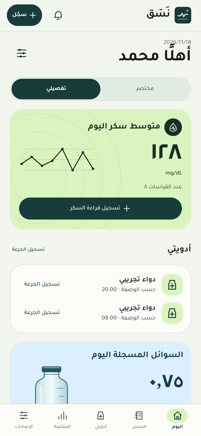
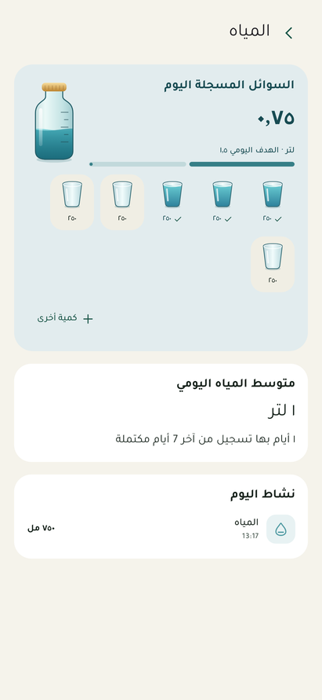
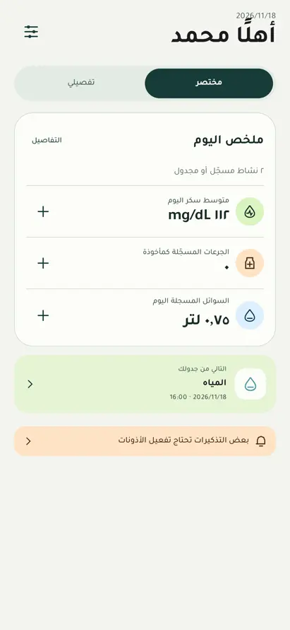
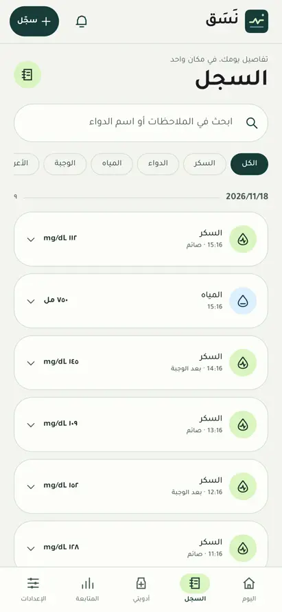
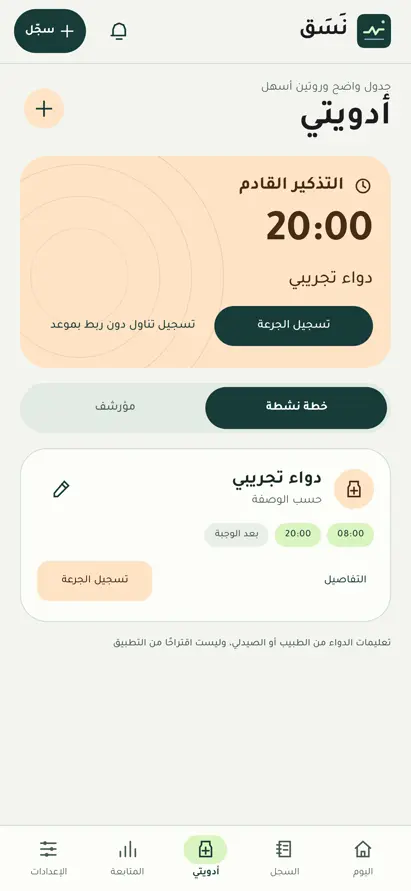
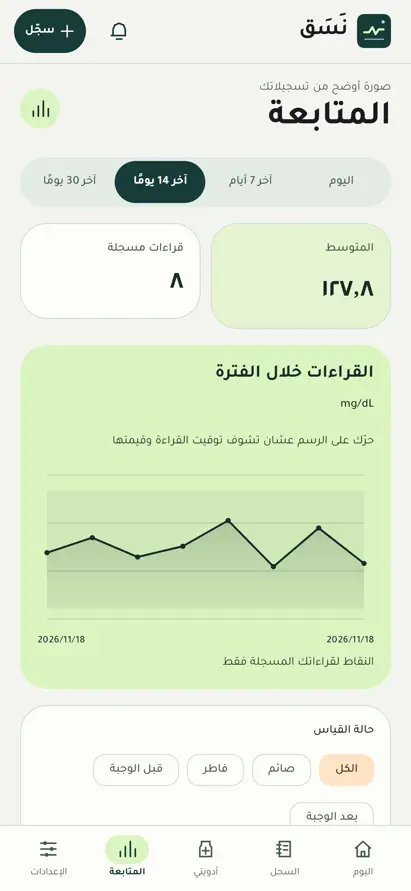
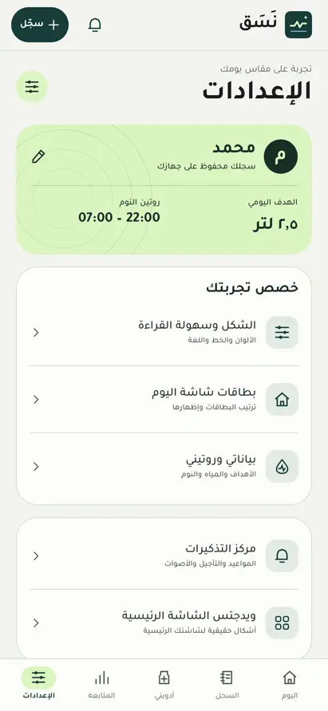

متوسط قراءات اليوم
احفظ سياق القياس ووحدته. يجمع نَسَق قراءات اليوم بعد توحيد الوحدات ويعرض المتوسط بوحدة العرض اللي اخترتها.
متابعة يومية على أندرويد
سجّل قراءاتك وكوبايات المياه وجرعاتك. شوف متوسط السكر وملخص يومك في التطبيق أو من الشاشة الرئيسية.
أندرويد 8 فأحدث · عربي وإنجليزي · حفظ محلي

احفظ سياق القياس ووحدته. يجمع نَسَق قراءات اليوم بعد توحيد الوحدات ويعرض المتوسط بوحدة العرض اللي اخترتها.
حدد هدفك وحجم الكوباية. مع كل تسجيل يتغير مستوى المياه في الزجاجة، وتقدر تضيف كمية تانية يدويًا.
اختار شكل الويدجت ومحتواه. اضغط على السكر أو المياه أو الدواء للوصول للقسم الخاص بيه.
سجلك محفوظ بتشفير محلي. تقدر تصدّر نسخة احتياطية مشفّرة بكلمة مرور وتسترجعها عند تغيير الهاتف.

المعاينة بتبدأ بهدف تجريبي قدره لتر. كل ضغطة تضيف 250 مل.
مل




